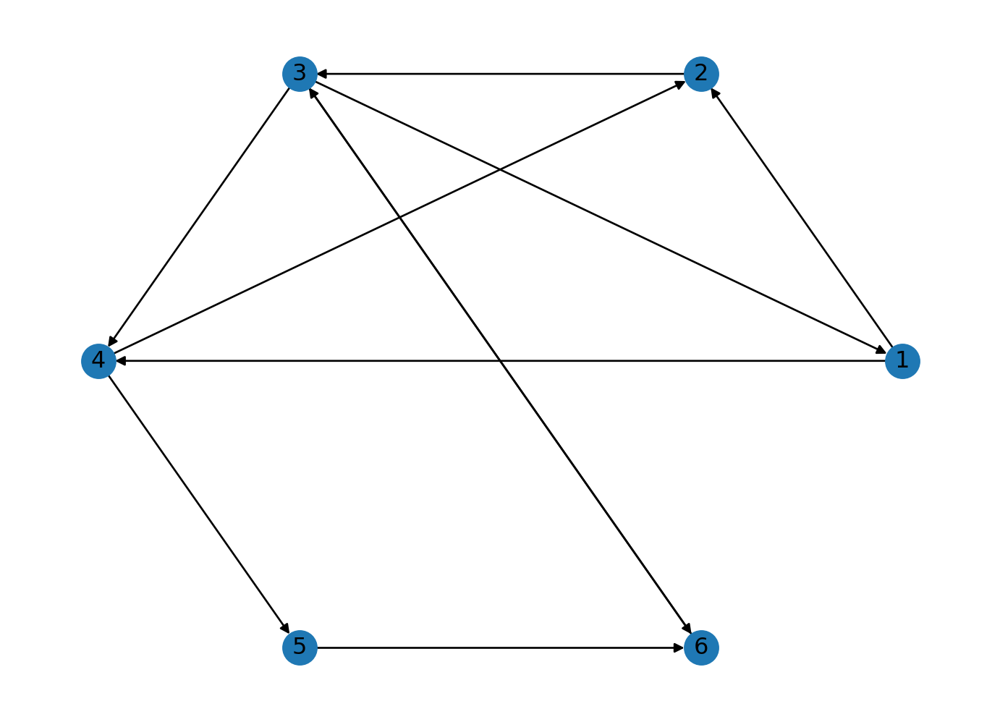
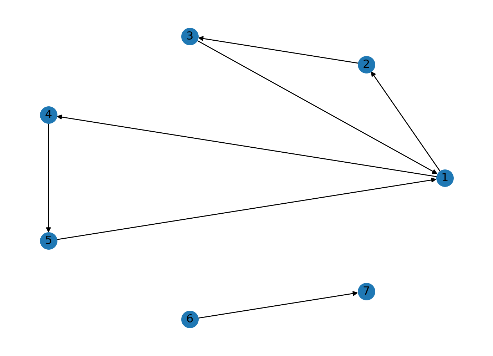
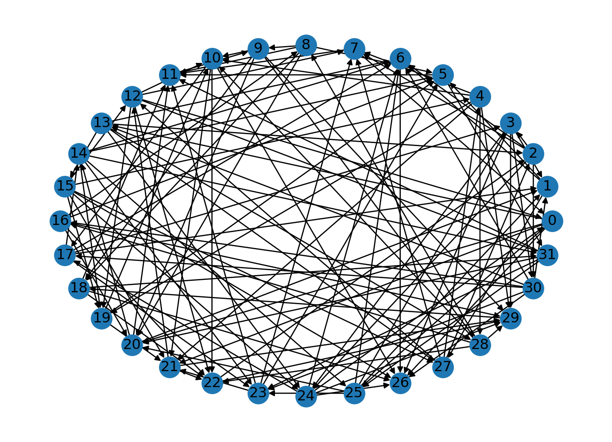
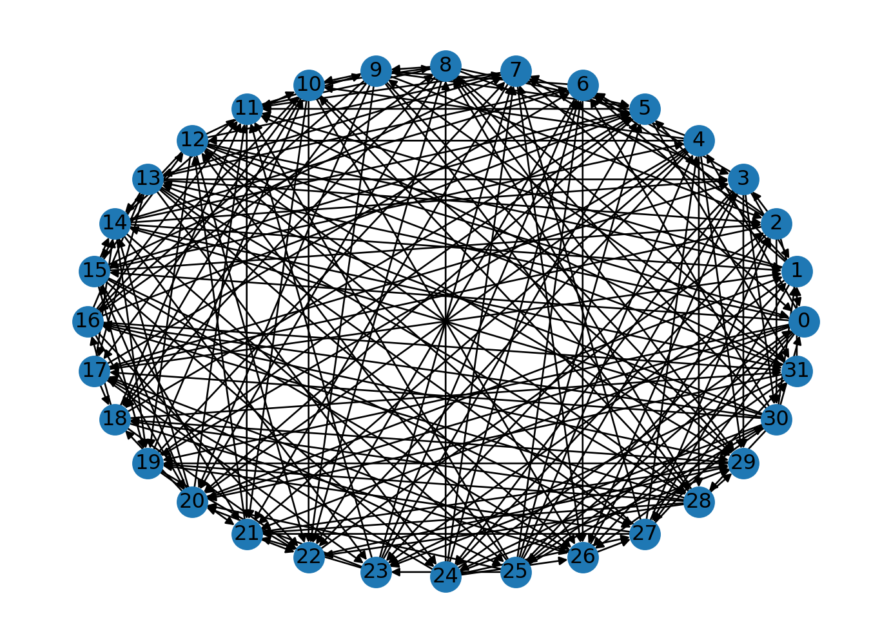
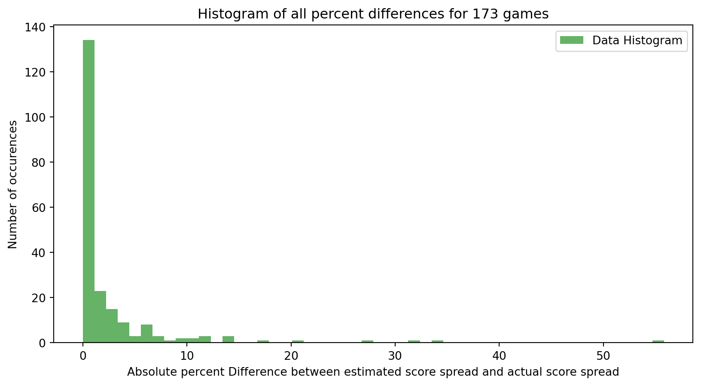
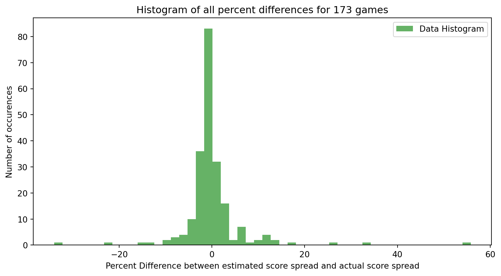
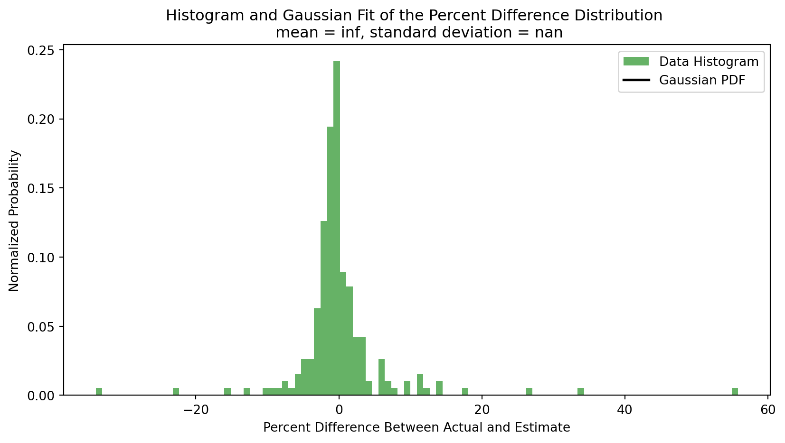

import networkx as nx
import numpy as np
import matplotlib.pyplot as pltNote: Project 1 was a joint effor by me (Hanyan Cai) AND Bobby Buyalos. We worked extensively on the discussions of the theories behind Project 1: Prologue and its three parts. Project 2 and 3 was completed independently by me with discussions with Bobby
Modeling with Directed Graphs
We are given that the digraph \(G\) has vertex set \(V = \{1, 2,3, 4,5,6\}\) and an edge set \(E\). Let us first implement this information with networkx.
# Coding in edge and node information for the digraph G
graph = nx.DiGraph()
graph.add_nodes_from([1,2,3,4,5,6])
edges = [(1,2), (2,3), (3,4), (4,2), (1,4), (3,1),(3,6), (6,3), (4,5), (5,6)]
graph.add_edges_from(edges)
# Plotting G
nx.draw_circular(graph, with_labels=True)
plt.show()
# Getting the incidence matrix
print("The incidence matrix: ")
incidence = nx.incidence_matrix(graph, oriented=True).todense(
)
The incidence matrix: Great, we have the matrix \(\begin{bmatrix} -1.00 & -1.00 & 0.00 & 0.00 & 1.00 & 0.00 & 0.00 & 0.00 & 0.00 & 0.00\\ 1.00 & 0.00 & -1.00 & 0.00 & 0.00 & 0.00 & 1.00 & 0.00 & 0.00 & 0.00\\ 0.00 & 0.00 & 1.00 & -1.00 & -1.00 & -1.00 & 0.00 & 0.00 & 0.00 & 1.00\\ 0.00 & 1.00 & 0.00 & 1.00 & 0.00 & 0.00 & -1.00 & -1.00 & 0.00 & 0.00\\ 0.00 & 0.00 & 0.00 & 0.00 & 0.00 & 0.00 & 0.00 & 1.00 & -1.00 & 0.00\\ 0.00 & 0.00 & 0.00 & 0.00 & 0.00 & 1.00 & 0.00 & 0.00 & 1.00 & -1.00 \end{bmatrix}\) as our incidence matrix.
Once we put this into reduced echelon form and solve it as a homogenous system of equations, we get: \(\begin{align*} x_1 &= x_4 + x_5 - x_7 - x_9 \\ x_2 &= -x_4 + x_7 + x_9 \\ x_3 &= x_4 + x_5 - x_9 \\ x_6 &= -x_9 + x_{10} \\ x_8 &= x_9 \end{align*}\).
The basis of the nullspace is then \(x_4\begin{bmatrix} 1 \\ -1 \\ 1 \\ 1 \\ 0 \\ 0 \\ 0 \\ 0 \\0 \\0 \end{bmatrix} + x_5\begin{bmatrix} 1 \\ 0 \\ 1 \\ 0 \\ 1 \\ 0 \\ 0 \\0\\0\\0\end{bmatrix} + x_7\begin{bmatrix} -1 \\ 1\\0\\0\\0\\0\\1\\0\\0\\0 \end{bmatrix} + x_9\begin{bmatrix} -1\\1\\-1\\0\\0\\-1\\0\\1\\1\\0\end{bmatrix} + x_{10}\begin{bmatrix} 0\\0\\0\\0\\0\\1\\0\\0\\0\\1\end{bmatrix}\). These vectors form the basis of directed loops.
This means that any vector within the span of these column vectors will be in the kernel. So when applied to the incidence matrix, the resulting vector will be 0. However, we have to careful because in our graph language, having -1 components in the basis of the nullspace means trouble. For example, suppose \(x_4 = 1\) and the rest of the coefficients are 0. Then, even though the incidence matrix times the resulting linear combination vector is 0, the meaning of the operation is that we have a subtraction of an edge, which may interpretted as a reversal of the edge direction. Therefore, we can restrict ourselves to only the elements in this nullspace such that all components are positive.
Part 1
For nodes \(1, \ldots, 6\), let \(x_1, \ldots, x_6\) represent the potentials for these nodes. Then, for an edge between node \(i\) and node \(j,\) we have that \(x_j - x_i\) represents the potential of that edge.
Let’s do this for each edge in our graph:
\[\begin{align*} &x_2 - x_1 \\ &x_3 - x_2 \\ &x_4 - x_3\\ &x_2 - x_4\\ &x_4 - x_1\\ &x_1 - x_3\\ &x_6 - x_3\\ &x_3 - x_6 \\ &x_5 - x_4 \\ &x_6 - x_5 \end{align*}\]
We can then put this in a matrix \(A\), and have that
A = \[\begin{bmatrix} -1 & 1 & 0 & 0 & 0 & 0 \\ 0 & -1 & 1 & 0 & 0 & 0 \\ 0 & 0 & -1 & 1 & 0 & 0 \\ 0 & 1 & 0 & -1 & 0 & 0 \\ -1 & 0 & 0 & 1 & 0 & 0 \\ 1 & 0 & -1 & 0 & 0 & 0 \\ 0 & 0 & -1 & 0 & 0 & 1 \\ 0 & 0 & 1 & 0 & 0 & -1 \\ 0 & 0 & 0 & -1 & 1 & 0 \\ 0 & 0 & 0 & 0 & -1 & 1 \\ \end{bmatrix}\] x = \[\begin{bmatrix} x_1 \\ x_2 \\ x_3 \\ x_4 \\ x_5 \\ x_6 \\ \end{bmatrix}\] b = \[\begin{bmatrix} x_2 - x_1 \\ x_3 - x_2 \\ x_4 - x_3 \\ x_2 - x_4 \\ x_4 - x_1 \\ x_1 - x_3 \\ x_6 - x_3 \\ x_3 - x_6 \\ x_5 - x_4 \\ x_6 - x_5 \\ \end{bmatrix}\]Call this system \(Ax = b\).
Now, here is the crucial observation: \(A^T\) is the incidence matrix of our graph! The transpose is
[ \[\begin{bmatrix} -1 & 0 & 0 & 0 & -1 & 1 & 0 & 0 & 0 & 0 \\ 1 & -1 & 0 & 1 & 0 & 0 & 0 & 0 & 0 & 0 \\ 0 & 1 & -1 & 0 & 0 & -1 & -1 & 1 & 0 & 0 \\ 0 & 0 & 1 & -1 & 1 & 0 & 0 & 0 & -1 & 0 \\ 0 & 0 & 0 & 0 & 0 & 0 & 0 & 0 & 1 & -1 \\ 0 & 0 & 0 & 0 & 0 & 0 & 0 & 0 & 0 & 1 \\ \end{bmatrix}\]]
Here, every column represents an edge, and every row represents a node!
Let \(b = b_1, \ldots, b_{10}\). Our condition for b is that it is consistent with \(Ax = b,\) with our \(A, x, b\) defined above. If this is the case, then we know that there exists a \(y\in \mathcal{N}(A^T)\) such that \(y\cdot b = 0\).
Since \(A^T\) is the incidence matrix of our graph, then we have that \(y\) is a loop of our graph! And, the \(i-th\) edge of our graph is represented by the \(i-th\) column of \(A^T\) and the \(i-th\) row of \(A\).
Observe that \(y\cdot b = y_1b_1 + \ldots + y_{10}b_{10} = y_1(x_2 - x_1) + \ldots + y_{10}(x_6 - x_5) = 0\). But, we can think of this as \(y_i\) as the coefficient applied to the \(i-th\) edge, \(b_i\). So, we know we have a loop (since \(y\) is a loop) and the sums of our potentials on the loop y are zero (since \(y \cdot b = 0)\), thus \(b\) is a vector of potential differences!
Part 2
How should we characterize Kirchoff’s Loop Rule for Currents constraint? Let us first find a way to characterize the summation of each nodes. Recall our incidence matrix: \(\begin{bmatrix} -1.00 & -1.00 & 0.00 & 0.00 & 1.00 & 0.00 & 0.00 & 0.00 & 0.00 & 0.00\\ 1.00 & 0.00 & -1.00 & 0.00 & 0.00 & 0.00 & 1.00 & 0.00 & 0.00 & 0.00\\ 0.00 & 0.00 & 1.00 & -1.00 & -1.00 & -1.00 & 0.00 & 0.00 & 0.00 & 1.00\\ 0.00 & 1.00 & 0.00 & 1.00 & 0.00 & 0.00 & -1.00 & -1.00 & 0.00 & 0.00\\ 0.00 & 0.00 & 0.00 & 0.00 & 0.00 & 0.00 & 0.00 & 1.00 & -1.00 & 0.00\\ 0.00 & 0.00 & 0.00 & 0.00 & 0.00 & 1.00 & 0.00 & 0.00 & 1.00 & -1.00 \end{bmatrix}\).
A given row corresponds to a given node. This node could be a resistor or some set junction of the circuit. For this row representing the node, \(-1\) represents an outgoing wire connection and \(1\) represents an ingoing wire connection. For example, consider row 1 which corresponds to node 1. We can see that there are two outgoing wire connections from node 1 to node 2 and node 4, while we have one incoming wire connection to node 1 from node 3.
Now, consider the vector \(d = \begin{bmatrix} d_1 \\ \vdots \\ d_i \\ \vdots \\ d_n\end{bmatrix}\), where $d_i = $ weight of edge \(i\), $n = $ number of edges.
The matrix product of row 1 with \(d\) gives us the sum of all weighted incoming and outgoing edges. So in our example, we consider: \(\begin{bmatrix} -1.00 & -1.00 & 0.00 & 0.00 & 1.00 & 0.00 & 0.00 & 0.00 & 0.00 & 0.00 \end{bmatrix} \begin{bmatrix} d_1 \\ \vdots \\ d_i \\ \vdots \\ d_n\end{bmatrix} = -d_1 -d_2 + d_4\). Since we are viewing the weights for the edges as the current that corresponds to the edge (wire), this product gives us the total change in current through node 1! Kirchoff’s Loop Rule for Current states that the total flow of current through any node has to be 0, which is equivalent to the condition that the incidence matrix \(A^T\) times \(d\): \(A^Td = 0\)! Therefore, any weight vector \(d\) constructed from the definition above must be in the nullspace of \(A^T\). Wow! Therefore, let us recall that $N(A^T) = $ Span\(\left\{\begin{bmatrix} 1 \\ -1 \\ 1 \\ 1 \\ 0 \\ 0 \\ 0 \\ 0 \\0 \\0 \end{bmatrix}, \begin{bmatrix} 1 \\ 0 \\ 1 \\ 0 \\ 1 \\ 0 \\ 0 \\0\\0\\0\end{bmatrix}, \begin{bmatrix} -1 \\ 1\\0\\0\\0\\0\\1\\0\\0\\0 \end{bmatrix}, \begin{bmatrix} -1\\1\\-1\\0\\0\\-1\\0\\1\\1\\0\end{bmatrix}, \begin{bmatrix} 0\\0\\0\\0\\0\\1\\0\\0\\0\\1\end{bmatrix}\right\}\).
So the weight vector must be an element in this span in order for the Kirchoff’s Law to be satisfied. For example, using this requirement, any basis vector in the above span and their scalar products are valid weights. The vector \(\begin{bmatrix} 1 \\ -1 \\ 1 \\ 1 \\ 0 \\ 0 \\ 0 \\ 0 \\0 \\0 \end{bmatrix} + \begin{bmatrix} 1 \\ 0 \\ 1 \\ 0 \\ 1 \\ 0 \\ 0 \\0\\0\\0\end{bmatrix} + \begin{bmatrix} -1 \\ 1\\0\\0\\0\\0\\1\\0\\0\\0 \end{bmatrix} + \begin{bmatrix} -1\\1\\-1\\0\\0\\-1\\0\\1\\1\\0\end{bmatrix} + \begin{bmatrix} 0\\0\\0\\0\\0\\1\\0\\0\\0\\1\end{bmatrix}\)
Part 3
We need to first clarify what we mean when we talk about a basis of directed loops. Since the problem does not expand in detail about the definition, we will find a clever way to characterize this basis without breaking the rules. Suppose we have a digraph and we have \(n\) directed loops that form a basis. Let us denote this basis by \(\{b_1, \dots, b_n\}\), where each \(b_i\) will be the directed loop vector that is linearly independent from \(b_j\), where \(i,j \in \{1, \dots, n\}\).
Now, we aren’t given any more information about this, so we think it is fair to have some leeway in expanding on the definition of any \(b_i\). Since \(b_i\) is a directed loop, we claim that it is fair for us to know what edges this directed loop contains. For any \(i \in \{1, \dots, n\}\), \(b_i = \{ e_{i_1}, \dots, e_{i_k}\}\) for some finite index sequence \(i_1, \dots, i_k\), where \(e_{i_l}\) is some edge vector for the graph (Remember, an arbitrary edge vector for the graph is simply an arbitrary column vector in the incidence matrix of the graph). This is a fair expansion to the assumption that was given because we require no information other than the actual edges that compose the directed loop. It is also clear that the linear independence of the directed loops within the basis is preserved by our expansion of definition.
Now, let node \(a\) and node \(b\) of the graph be given. We want to know whether these two nodes can communicate with each other, i.e, whether these two nodes are in a loop.
Consider the set \(D = \{e \text{ a column vector of the graph incidence matrix :} e \in b_i = \{ e_{i_1}, \dots, e_{i_k}\} \text{for some } i \in \{1, \dots, n\} \}\). The \(Span(D)\) is defined because these column vectors have to be linearly independent by zero-nonzero observations.
Define $e^* $ as the edge vector from node \(a\) to node \(b\). For example, if we have a graph with node \(a\), \(b\), \(c\) as row \(1, 2, 3\) of the incidence matrix respectively, \(e^* = \begin{bmatrix} -1 \\ 1 \\ 0 \end{bmatrix}\).
Theorem: If \(e^* \in Span(D)\) if and only if node \(a\) and node \(b\) is in a loop of the graph.
A formal proof will not be given. A sketch is as follows:
The edge vector \(e^*\) denotes a path from node \(a\) to node \(b\). If \(e^* \in Span(D)\), then the path from node \(a\) to node \(b\) exists by a combination of paths that lie in arbitrary number of loops in the graph. The path from node \(b\) to node \(a\) also has to exists as we simply multiply the linear combination of the paths in \(D\) that make up \(e^*\) by \(-1\), which gives us the edge vector from node \(b\) to node \(a\). Therefore, we have found a loop that connects node \(a\) and node \(b\).
Now, suppose node \(a\) and node \(b\) is in a loop of the graph. Then there exists a linear combination of directed loop basis elements that equals the loop that makes up node \(a\) and node \(b\). It quickly follows that there is a linear combination of elements in \(D\) that equals both the path from node \(a\) to node \(b\) and the path from node \(b\) to node \(a\).
Therefore, we have found a way to determine whether two nodes can communicate with each other. That is, they can talk with each other as long as a path between the two nodes is in the column space of \(D\). To determine this, we simply build \(D\) matrix and solve for the system \(Dx = b\), where \(b\) denotes the incidence column vector/edge vector that denotes a path between the two nodes. If there is a solution, then the two nodes can talk with each other. If not, then they cannot.
Let us test this theorem with a real example.
V = [1, 2, 3, 4, 5, 6, 7]
E = [(1, 2), (2, 3), (3,1), (1,4), (4,5), (5,1), (6,7)]
#construct graph
G = nx.DiGraph()
G.add_nodes_from(V)
G.add_edges_from(E)
# Draw the graph
nx.draw_circular(G, with_labels=True)
plt.show()
Now, we can create a basis of directed loops for this graph in the following way:
\[ \left\{ \left\{ \begin{pmatrix} -1 \\ 1 \\ 0 \\ 0 \\ 0 \\ 0 \\ 0 \end{pmatrix}, \begin{pmatrix} 0 \\ -1 \\ 1 \\ 0 \\ 0 \\ 0 \\ 0 \end{pmatrix}, \begin{pmatrix} 1 \\ 0 \\ -1 \\ 0 \\ 0 \\ 0 \\ 0 \end{pmatrix} \right\}, \left\{ \begin{pmatrix} -1 \\ 0 \\ 0 \\ 1 \\ 0 \\ 0 \\ 0 \end{pmatrix}, \begin{pmatrix} 0 \\ 0 \\ 0 \\ -1 \\ 1 \\ 0 \\ 0 \end{pmatrix}, \begin{pmatrix} 1 \\ 0 \\ 0 \\ 0 \\ -1 \\ 0 \\ 0 \end{pmatrix} \right\} \right\} \]
This will produce the vector enclosed in curly braces.
Now, we want to see if this works! Lets first test if our method will work. Lets see if it can detect if node 5 and 2 are connected.
So, our first step is to consider the column space of all of the vectors within our sets in our basis of directed loops. We can visualize this with a matrix:
\[ \begin{pmatrix} -1 & 0 & 1 & -1 & 0 & 1 \\ 1 & -1 & 0 & 0 & 0 & 0 \\ 0 & 1 & -1 & 0 & 0 & 0 \\ 0 & 0 & 0 & 1 & -1 & 0 \\ 0 & 0 & 0 & 0 & 1 & -1 \\ 0 & 0 & 0 & 0 & 0 & 0 \\ 0 & 0 & 0 & 0 & 0 & 0 \\ \end{pmatrix} \]
Lets put this as a numpy array. We want to consider the vector from 2 to 5, which looks like \[\begin{pmatrix} 0 \\ -1 \\ 0 \\ 0 \\ 1 \\ 0 \\ 0 \end{pmatrix} \].
It took me a while to understand what you were doing here. You were making a basis not of directed loops, but of edges which are part of directed loops. Nice.
We want to test if this is in the column space of our matrix! We can check this by solving Ax = b.
To do this, we will use a least squares solver and show that this produces a geniune solution to Ax = b, so we know that b is in the column space of A.
I reproduced your A as inc*sp.diagonalize_vector(inc.nullspace()[1]+inc.nullspace()[0]) where inc is the incidence matrix (in sympy)
::: {#09a751bc .cell execution_count=5}
``` {.python .cell-code}
A = np.array([
[-1, 0, 1, -1, 0, 1],
[1, -1, 0, 0, 0, 0],
[0, 1, -1, 0, 0, 0],
[0, 0, 0, 1, -1, 0],
[0, 0, 0, 0, 1, -1],
[0, 0, 0, 0, 0, 0],
[0, 0, 0, 0, 0, 0]
])
b= np.array([
[0],
[-1],
[0],
[0],
[1],
[0],
[0]
])
x, residuals, _, _ = np.linalg.lstsq(A, b, rcond=None)
print("Does Ax = b:", np.allclose(A@x, b))
Does Ax = b: TrueNow lets make sure that is doesn’t work when it should not! Lets show that it will not detect a connection between node 7 and 1. Lets see if the following vector is in the column space of the matrix from above. \[\begin{pmatrix} 1 \\ 0 \\ 0 \\ 0 \\ 0 \\ 0 \\ -1 \end{pmatrix} \]
To do this, we will use a least squares solver and show that this will produce a non-genuine solution, i.e. Ax = b is not consistent:
A = np.array([
[-1, 0, 1, -1, 0, 1],
[1, -1, 0, 0, 0, 0],
[0, 1, -1, 0, 0, 0],
[0, 0, 0, 1, -1, 0],
[0, 0, 0, 0, 1, -1],
[0, 0, 0, 0, 0, 0],
[0, 0, 0, 0, 0, 0]
])
b = np.array([
[1],
[0],
[0],
[0],
[1],
[0],
[-1]
])
x, residuals, _, _ = np.linalg.lstsq(A, b, rcond=None)
print("Does Ax = b:", np.allclose(A@x, b))Does Ax = b: FalseTherefore, we see that our method is working! In this way, give a basis of directed loops, our theorem gives us an algorithms that we can use to know if any two nodes are connected in a loop!
A question for future exploration may be: how can one efficiently obtain such a basis, especially for graphs with a large number of nodes (can
Very well done. I hadn’t thought of using the least squares method.
Here is a way to do this a bit more systematically: once you have your incidence matrix corresponding only to edges which are in directed loops, square it to find an adjacency matrix. Then remove the diagonal elements (so you don’t have self-loops. Finally, you can see which nodes are connected by taking powers of this adjacency matrix – if you go up to like the matrix ^ 10 and there is a nonzero value in {i,j}, that means that eventually you can get from i to j via directed loops.)
Grade: E
Image Compression and Text Detection
See Quarto Document
Least Squares
We will use the sports NFL data from GitHub.
import pandas as pd
#from google.colab import drive
#drive.mount('/content/drive')
#df = pd.read_csv('/content/drive/My Drive/Colab Notebooks/nfl 1978.csv')
df = pd.read_csv('nfl 2014.csv')
data = dfLet us cut this data in half. We will get an estimate with this data and compare our estimated potential to the other half later.
df = df.head(133)Now let us put everything into a graph. We have very good motivation for this. Let us discuss this in detail. Our goal for this project is to find a way to estimate the score spreads of unknown games from existing data regarding the score spreads of the teams that play each other. To do this, we will consider a linear system of equations and fit this system of equations by the normal equations method.
Now, why do we want to use the graph formalism? The system of equations we will define will be very close to the incidence matrix of a graph. How? Let us check out a simplified example first. Suppose we have three teams A, B, C. Using the same formalism as the problem, the table will be given as follows, the first column and row will be A, second will be B, and third will be C: \(\begin{bmatrix} & 2 & 3 \\ 3 & & 1 \\ 8 & 2 & \end{bmatrix}\). For example, from this matrix we know that team A played against team B and team A had a score of 2, team B had a score of 3. (This table representation is not important for us here, because we will analyze the data straight from the imported csv) Then, the absolute value of the score difference will be 1. One linear equation we have is then going to be \(x(A) - x(B) = 1\), where the X will be the three dimension vector \(\begin{bmatrix} x(A) \\ x(B) \\ x(C) \end{bmatrix}\) and 1 is the absolute value of the score difference. Hopefully you can already see the resemblance! From this one system of equation we can get the matrix \(\begin{bmatrix} 1 & -1 & 0 \end{bmatrix}\begin{bmatrix} x(A) \\ x(B) \\ x(C) \end{bmatrix} = 1\). If we take the transpose of \(\begin{bmatrix} 1 & -1 & 0 \end{bmatrix}\), it looks like a column of the incidence matrix of a graph! Note that I intentionally made the equation \(x(A) - x(B) = 1\), which represents the edge B goes to A, representing that B wins over A. Then we can put this into a graph, the incidence matrix of this graph will have that transpose as a column vector! Therefore, the graph formalism will provide us with an easy way to construct our systeam of linear equations.
Ok. First let us define a dictionary to include all of the teams. We will introduce some code to delete extra games that two teams play. This is because if we don’t, we will get different data for the same paramters (same teams). If that happens, for our incidence matrix we will get more than one row with -1 and 1 in the same columns, leading to two linearly dependent row vectors! Then, the transpose of the incidence matrix will not have full column rank, which results in the normal equation matrix \(A^TA\), where \(A\) is the tranpose to the incidence matrix, becoming uninvertible.
# Get team names
teamNames = pd.concat([df["home_team"], df["visiting_team"]]).reset_index(drop=True)
uniqueTeamNames = teamNames.unique()
teamIndex = {team: index for index, team in enumerate(uniqueTeamNames)}
numberOfTeams = len(teamIndex)
# Construct the vertices for the graph. The vertice will correspond to the sports
# team in the teamIndex dictionary.
teamGraph = nx.DiGraph()
teamGraph.add_nodes_from(range(numberOfTeams))
# Cut the graph into the columns we need
teamTable = df[["home_team", "home_score", "visitors_score", "visiting_team"]]
# Iterate and look at the wins and score differences
edges = []
repeatChecker = [["null","null"]]
weights = []
for index, row in teamTable.iterrows():
ticker = 0
# Checking for repeating games. We will skip if two teams already played a game.
for teamPair in repeatChecker:
if (row["home_team"] == teamPair[0]) & (row["visiting_team"] == teamPair[1]):
ticker = 1
break
elif (row["home_team"] == teamPair[1]) & (row["visiting_team"] == teamPair[0]):
ticker = 1
break
if ticker == 1:
continue
scoreDiff = row["home_score"] - row["visitors_score"]
weight = abs(scoreDiff)
weights.append(weight)
if scoreDiff >= 0:
# The home team won or tied against the visiting team. We count that as wins.
# the edge will be from the home team to the losing team
edge = (teamIndex[row["home_team"]], teamIndex[row["visiting_team"]], weight)
edges.append(edge)
elif scoreDiff < 0:
# The home team lost against the visiting team.
edge = (teamIndex[row["visiting_team"]], teamIndex[row["home_team"]], weight)
edges.append(edge)
# Appending the pair of teams to the repeatChecker
repeatChecker.append([row["visiting_team"], row["home_team"]])
teamGraph.add_weighted_edges_from(edges)
nx.draw_circular(teamGraph, with_labels=True)
plt.show()
print(len(edges))
print("The incidence matrix: ")
incidence = nx.incidence_matrix(teamGraph, oriented=True).todense(
)
print(incidence)
129
The incidence matrix:
[[-1. -1. -1. ... 0. 0. 0.]
[ 0. 0. 0. ... 0. 0. 0.]
[ 0. 0. 0. ... 0. 0. 0.]
...
[ 0. 0. 0. ... 0. 0. 0.]
[ 0. 0. 0. ... 0. 0. 0.]
[ 0. 0. 0. ... -1. -1. -1.]]We have placed every team into distinct indices. Now, we should construct the normal equations. The b is going to be the weights vector. The A will have to be the transpose of the incidence matrix.
A = np.transpose(incidence)
print(A)
b = np.array(weights)
ATA = incidence @ A
if np.linalg.det(ATA) == 0:
print("A transpose times A is noninvertible!")
else:
print("A tranpose times A is invertible!")[[-1. 0. 0. ... 0. 0. 0.]
[-1. 0. 0. ... 0. 0. 0.]
[-1. 0. 0. ... 0. 0. 0.]
...
[ 0. 0. 0. ... 0. 0. -1.]
[ 0. 0. 0. ... 0. 0. -1.]
[ 0. 0. 0. ... 0. 0. -1.]]
A tranpose times A is invertible!Great, we have determined that A transpose times A is invertible. This result is not surprising considering we only consider one game per pair of teams. This allows us to solve the normal equations very easily. We will simply find the inverse to ATA. The inverse ATA applied to b will give us the best estimate for the x potential vector.
\(A^T A x = A^T b\\ \Rightarrow x = (A^TA)^{-1} A^Tx\)
inverseATA = np.linalg.inv(ATA)
print(np.shape(A))
print(np.shape(incidence))
print(np.shape(inverseATA))
print(np.shape(b))
xEstimate = inverseATA @ incidence @ b(129, 32)
(32, 129)
(32, 32)
(129,)The xEstimate will then give us the best linear estimate for the potential value for every team. Let us put the results in a nicer format.
def get_key_from_value(dictionary, value):
for key, val in dictionary.items():
if val == value:
return key
return "Key not found"
for index in range(np.size(xEstimate)):
print(f"Potential for the {get_key_from_value(teamIndex, index)}: {np.round(xEstimate[index], decimals=2)}")Potential for the Seahawks: -37.88
Potential for the Bears: -27.62
Potential for the Chiefs: -19.88
Potential for the Dolphins: -45.12
Potential for the Eagles: -35.25
Potential for the Falcons: -11.19
Potential for the Jets: -40.56
Potential for the Rams: -41.0
Potential for the Ravens: -48.06
Potential for the Steelers: -33.88
Potential for the Texans: -35.94
Potential for the Buccaneers: -37.19
Potential for the Cowboys: -48.25
Potential for the Broncos: -30.62
Potential for the Lions: -57.19
Potential for the Cardinals: -27.12
Potential for the Bengals: -45.75
Potential for the Bills: -62.75
Potential for the Browns: -33.19
Potential for the Giants: -0.38
Potential for the Panthers: -55.81
Potential for the Redskins: -22.25
Potential for the Titans: -35.0
Potential for the Vikings: -55.0
Potential for the Chargers: -18.81
Potential for the Packers: -45.88
Potential for the Raiders: -18.5
Potential for the 49ers: -47.75
Potential for the Colts: -49.75
Potential for the Jaguars: -25.06
Potential for the Patriots: -52.88
Potential for the Saints: -20.31Nice, now we have a general estimate for the potentials of each team. Let us see how well this potential estimate does against our actual data. We need to first reconstruct our graph by adding the new data.
teamTable = data[["home_team", "home_score", "visitors_score", "visiting_team"]]
for index, row in teamTable.iterrows():
ticker = 0
# Adding a condition to skip the previous rows
if index < 133:
continue
# Checking for repeating games. We will skip if two teams already played a game.
for teamPair in repeatChecker:
if (row["home_team"] == teamPair[0]) & (row["visiting_team"] == teamPair[1]):
ticker = 1
break
elif (row["home_team"] == teamPair[1]) & (row["visiting_team"] == teamPair[0]):
ticker = 1
break
if ticker == 1:
continue
scoreDiff = row["home_score"] - row["visitors_score"]
weight = abs(scoreDiff)
weights.append(weight)
if scoreDiff >= 0:
# The home team won or tied against the visiting team. We count that as wins.
# the edge will be from the home team to the losing team
edge = (teamIndex[row["home_team"]], teamIndex[row["visiting_team"]], weight)
edges.append(edge)
elif scoreDiff < 0:
# The home team lost against the visiting team.
edge = (teamIndex[row["visiting_team"]], teamIndex[row["home_team"]], weight)
edges.append(edge)
# Appending the pair of teams to the repeatChecker
repeatChecker.append([row["visiting_team"], row["home_team"]])
teamGraph.add_weighted_edges_from(edges)
nx.draw_circular(teamGraph, with_labels=True)
plt.show()
print(len(edges))
print("The incidence matrix: ")
incidence = nx.incidence_matrix(teamGraph, oriented=True).todense(
)
print(incidence)
213
The incidence matrix:
[[-1. -1. -1. ... 0. 0. 0.]
[ 0. 0. 0. ... 0. 0. 1.]
[ 0. 0. 0. ... 0. 0. 0.]
...
[ 0. 0. 0. ... 0. 0. 0.]
[ 0. 0. 0. ... 0. 0. 0.]
[ 0. 0. 0. ... -1. -1. -1.]]Now let us get the estimated score spreads. We will multiply ATA by our xEstimate.
A = np.transpose(incidence)
print(A)
b = np.array(weights)
estimatedScoreSpreads = A @ xEstimate
print(np.shape(estimatedScoreSpreads))
print("Percent difference between the estimate and the actual score spread for the game between:")
deviationDistribution = []
for index in range(np.size(estimatedScoreSpreads)):
difference = np.abs(np.abs(estimatedScoreSpreads[index]) - np.abs(b[index])) / np.abs(b[index])
print(f"{get_key_from_value(teamIndex, edges[index][0])} and {get_key_from_value(teamIndex, edges[index][1])}: {np.round(difference, decimals=2)}")
deviationDistribution.append(difference)[[-1. 0. 0. ... 0. 0. 0.]
[-1. 0. 0. ... 0. 0. 0.]
[-1. 0. 0. ... 0. 0. 0.]
...
[ 0. 0. 0. ... 0. 0. -1.]
[ 0. 0. 0. ... 0. 0. -1.]
[ 0. 1. 0. ... 0. 0. -1.]]
(213,)
Percent difference between the estimate and the actual score spread for the game between:
Seahawks and Packers: 0.6
Bills and Bears: 1.42
Titans and Chiefs: 0.02
Dolphins and Patriots: 0.38
Eagles and Jaguars: 0.14
Falcons and Saints: 11.5
Jets and Raiders: 1.15
Vikings and Rams: 0.65
Bengals and Ravens: 0.62
Steelers and Browns: 5.71
Texans and Redskins: 0.18
Panthers and Buccaneers: 1.74
49ers and Cowboys: 1.49
Broncos and Colts: 0.37
Lions and Giants: 0.2
Cardinals and Chargers: 32.0
Ravens and Steelers: 0.95
Bengals and Falcons: 0.51
Bills and Dolphins: 0.09
Browns and Saints: 20.44
Cardinals and Giants: 0.64
Panthers and Lions: 0.54
Redskins and Jaguars: 0.14
Cowboys and Titans: 0.09
Patriots and Vikings: 0.13
Rams and Buccaneers: 12.16
Chargers and Seahawks: 0.49
Broncos and Chiefs: 0.41
Packers and Jets: 0.46
Texans and Raiders: 0.09
Bears and 49ers: 0.62
Eagles and Colts: 0.92
Falcons and Buccaneers: 0.17
Bengals and Titans: 0.97
Chargers and Bills: 0.71
Ravens and Browns: 0.88
Eagles and Redskins: 3.33
Giants and Texans: 0.3
Colts and Jaguars: 0.04
Lions and Packers: 2.72
Patriots and Raiders: 1.28
Cowboys and Rams: 6.35
Saints and Vikings: 0.39
Cardinals and 49ers: 0.38
Chiefs and Dolphins: 0.8
Seahawks and Broncos: 0.48
Steelers and Panthers: 0.42
Bears and Jets: 1.81
Giants and Redskins: 0.4
Packers and Bears: 0.32
Colts and Titans: 0.38
Lions and Jets: 0.11
Dolphins and Raiders: 0.55
Ravens and Panthers: 0.32
Buccaneers and Steelers: 3.35
Texans and Bills: 3.62
Chargers and Jaguars: 0.85
49ers and Eagles: 3.6
Vikings and Falcons: 0.95
Cowboys and Saints: 0.04
Chiefs and Patriots: 0.67
Packers and Vikings: 0.94
Colts and Ravens: 1.27
Cowboys and Texans: 0.62
Eagles and Rams: 0.98
Giants and Falcons: 1.27
Steelers and Jaguars: 0.75
Bills and Lions: 3.56
Panthers and Bears: 1.49
Saints and Buccaneers: 3.47
Browns and Titans: 0.06
Broncos and Cardinals: 0.87
49ers and Chiefs: 1.18
Chargers and Jets: 0.61
Patriots and Bengals: 0.87
Seahawks and Redskins: 0.49
Colts and Texans: 1.65
Bengals and Panthers: inf
Patriots and Bills: 0.86
Ravens and Buccaneers: 0.6
Packers and Dolphins: 2.46
Bears and Falcons: 2.42
Broncos and Jets: 0.66
Titans and Jaguars: 9.31
Lions and Vikings: 0.89
Chargers and Raiders: 1.98
Cardinals and Redskins: 0.91
Cowboys and Seahawks: 0.54
Eagles and Giants: 0.87
49ers and Rams: 0.29
Patriots and Jets: 7.56
Dolphins and Bears: 0.09
Bills and Vikings: 11.12
Colts and Bengals: 0.46
Jaguars and Browns: 0.78
Lions and Saints: 55.81
Packers and Panthers: 0.46
Rams and Seahawks: 7.31
Ravens and Falcons: 0.9
Redskins and Titans: 17.44
Chiefs and Chargers: 14.33
Cowboys and Giants: 0.21
Cardinals and Raiders: 1.69
Broncos and 49ers: 0.2
Steelers and Texans: 0.19
Broncos and Chargers: 0.91
Vikings and Buccaneers: 2.44
Chiefs and Rams: 0.82
Lions and Falcons: 7.62
Dolphins and Jaguars: 0.42
Bills and Jets: 0.06
Seahawks and Panthers: 2.47
Patriots and Bears: 0.07
Texans and Titans: 0.48
Cardinals and Eagles: 0.42
Browns and Raiders: 2.46
Steelers and Colts: 0.37
Saints and Packers: 0.52
Redskins and Cowboys: 5.9
Saints and Panthers: 0.41
Bengals and Jaguars: 0.02
Browns and Buccaneers: 0.71
Chiefs and Jets: 0.08
Cardinals and Cowboys: 2.19
Dolphins and Chargers: 0.52
Eagles and Texans: 0.44
Vikings and Redskins: 1.58
Patriots and Broncos: 0.01
Seahawks and Raiders: 3.93
Colts and Giants: 0.05
Browns and Bengals: 0.39
Chiefs and Bills: 0.55
Cowboys and Jaguars: 0.05
Jets and Steelers: 0.43
Lions and Dolphins: 2.14
Ravens and Titans: 0.57
49ers and Saints: 10.85
Broncos and Raiders: 0.09
Cardinals and Rams: 0.36
Seahawks and Giants: 0.65
Eagles and Panthers: 0.69
Bears and Vikings: 1.33
Texans and Browns: 0.91
Chiefs and Seahawks: 6.05
49ers and Giants: 2.77
Packers and Eagles: 0.13
Falcons and Panthers: 0.41
Rams and Broncos: 0.15
Buccaneers and Redskins: 0.3
Bengals and Saints: 0.11
Cardinals and Lions: 0.24
Patriots and Colts: 0.36
Steelers and Titans: 13.6
Raiders and Chiefs: 3.45
Bears and Buccaneers: 3.09
Eagles and Titans: 0.96
Browns and Falcons: 6.22
Patriots and Lions: 0.24
Bengals and Texans: 3.88
Chargers and Rams: 1.08
Seahawks and Cardinals: 0.36
49ers and Redskins: 0.92
Broncos and Dolphins: 6.4
Ravens and Saints: 3.18
Eagles and Cowboys: 0.26
Seahawks and 49ers: 0.67
Lions and Bears: 0.07
Bills and Browns: 0.43
Bengals and Buccaneers: 0.25
Colts and Redskins: 0.55
Jaguars and Giants: 9.62
Rams and Raiders: 0.87
Chargers and Ravens: 33.69
Saints and Steelers: 1.9
Vikings and Panthers: 0.87
Falcons and Cardinals: 0.88
Packers and Patriots: 4.85
Dolphins and Jets: 13.75
Cowboys and Bears: 0.96
Steelers and Bengals: 0.4
Colts and Browns: 26.88
Ravens and Dolphins: 0.55
Texans and Jaguars: 0.96
Lions and Buccaneers: 1.79
Rams and Redskins: 0.06
Giants and Titans: 0.15
Vikings and Jets: 1.46
Broncos and Bills: 0.76
Cardinals and Chiefs: 3.6
Seahawks and Eagles: 0.6
Raiders and 49ers: 3.49
Patriots and Chargers: 2.06
Packers and Falcons: 1.76
Bills and Packers: 0.02
Steelers and Falcons: 2.53
Ravens and Jaguars: 0.73
Jets and Titans: 5.88
Saints and Bears: 0.55
Chargers and 49ers: 2.29
Packers and Buccaneers: 0.28
Dolphins and Vikings: 11.62
Panthers and Browns: 4.56
Steelers and Chiefs: 0.61
Texans and Ravens: 0.64
Giants and Rams: 2.41
Cowboys and Colts: 0.86
Raiders and Bills: 6.5
Bengals and Broncos: 2.85
Panthers and Cardinals: 0.53
Cowboys and Lions: 5.39
Patriots and Ravens: 7.88
Packers and Cowboys: 1.71
Patriots and Seahawks: 0.83/var/folders/nw/bgfbrcp92xxbt0l2nkylhyqm0000gq/T/ipykernel_21795/2412539675.py:14: RuntimeWarning:
divide by zero encountered in scalar divide
import matplotlib.pyplot as plt
dd=np.array(deviationDistribution)
dd=dd[np.isfinite(dd)]
# Create plots
plt.figure(figsize=(10, 5))
# Plot histogram of the data
plt.hist(dd, bins=50, density=False, alpha=0.6, color='g', label='Data Histogram')
# Add title and labels
plt.title('Histogram of all percent differences for 173 games')
plt.xlabel('Absolute percent Difference between estimated score spread and actual score spread')
plt.ylabel('Number of occurences')
# Add legend
plt.legend()
# Show the plot
plt.show()
I define the absolute percent difference for each game as \(\frac{|\text{Estimated Score Spread}| - |\text{Actual Score Spread}|}{|\text{Actual Score Spread}|}\). We used 117 games to construct our normal equations fit and tested it with 173 games. From the histogram plot, we can see that our normal equation estimate works surprisingly well in estimating the score spreads of these games, with a small percentage of the games deviating more from the percent difference estimate. Now, let us try a different metric because this percent difference equation gives us a lot of leeway. If the estimate is -1 and the actual is 1, then we will get 0 for the percent difference, which is not right! So let us try again, but this time define the percent difference equation as \(\frac{\text{Estimated Score Spread} - \text{Actual Score Spread}}{\text{Actual Score Spread}}\).
deviationDistribution = []
print("Percent difference between the estimate and the actual score spread for the game between:")
for index in range(np.size(estimatedScoreSpreads)):
difference = ((estimatedScoreSpreads[index]) - b[index]) / b[index]
print(f"{get_key_from_value(teamIndex, edges[index][0])} and {get_key_from_value(teamIndex, edges[index][1])}: {np.round(difference, decimals=2)}")
deviationDistribution.append(difference)
# Create plots
plt.figure(figsize=(10, 5))
# Plot histogram of the data
dd=np.array(deviationDistribution)
dd=dd[np.isfinite(dd)]
plt.hist(dd, bins=50, density=False, alpha=0.6, color='g', label='Data Histogram')
# Add title and labels
plt.title('Histogram of all percent differences for 173 games')
plt.xlabel('Percent Difference between estimated score spread and actual score spread')
plt.ylabel('Number of occurences')
# Add legend
plt.legend()
# Show the plot
plt.show()Percent difference between the estimate and the actual score spread for the game between:
Seahawks and Packers: -1.4
Bills and Bears: 1.42
Titans and Chiefs: -0.02
Dolphins and Patriots: -2.38
Eagles and Jaguars: 0.14
Falcons and Saints: 11.5
Jets and Raiders: 1.15
Vikings and Rams: -1.35
Bengals and Ravens: -0.62
Steelers and Browns: -7.71
Texans and Redskins: -2.18
Panthers and Buccaneers: 1.74
49ers and Cowboys: -3.49
Broncos and Colts: -2.37
Lions and Giants: -2.2
Cardinals and Chargers: -34.0
Ravens and Steelers: -0.95
Bengals and Falcons: -2.51
Bills and Dolphins: -2.09
Browns and Saints: -22.44
Cardinals and Giants: -2.64
Panthers and Lions: -1.46
Redskins and Jaguars: -0.14
Cowboys and Titans: 0.09
Patriots and Vikings: -0.13
Rams and Buccaneers: 12.16
Chargers and Seahawks: -0.49
Broncos and Chiefs: -2.41
Packers and Jets: 0.46
Texans and Raiders: -1.91
Bears and 49ers: 0.62
Eagles and Colts: -2.92
Falcons and Buccaneers: -0.17
Bengals and Titans: -1.03
Chargers and Bills: -2.71
Ravens and Browns: -0.88
Eagles and Redskins: -5.33
Giants and Texans: -1.7
Colts and Jaguars: -1.96
Lions and Packers: -4.72
Patriots and Raiders: -3.28
Cowboys and Rams: 6.35
Saints and Vikings: -0.39
Cardinals and 49ers: -0.38
Chiefs and Dolphins: -0.8
Seahawks and Broncos: -0.48
Steelers and Panthers: -0.42
Bears and Jets: 1.81
Giants and Redskins: -0.4
Packers and Bears: -0.32
Colts and Titans: -0.38
Lions and Jets: -2.11
Dolphins and Raiders: -0.55
Ravens and Panthers: 0.32
Buccaneers and Steelers: 3.35
Texans and Bills: 3.62
Chargers and Jaguars: -0.85
49ers and Eagles: 3.6
Vikings and Falcons: -0.95
Cowboys and Saints: -2.04
Chiefs and Patriots: -0.67
Packers and Vikings: -1.06
Colts and Ravens: -3.27
Cowboys and Texans: -1.38
Eagles and Rams: -2.98
Giants and Falcons: 1.27
Steelers and Jaguars: 0.75
Bills and Lions: 3.56
Panthers and Bears: 1.49
Saints and Buccaneers: -5.47
Browns and Titans: -0.06
Broncos and Cardinals: -0.87
49ers and Chiefs: 1.18
Chargers and Jets: -1.39
Patriots and Bengals: -0.87
Seahawks and Redskins: 0.49
Colts and Texans: 1.65
Bengals and Panthers: inf
Patriots and Bills: 0.86
Ravens and Buccaneers: -0.6
Packers and Dolphins: 2.46
Bears and Falcons: 2.42
Broncos and Jets: 0.66
Titans and Jaguars: 9.31
Lions and Vikings: -1.11
Chargers and Raiders: -3.98
Cardinals and Redskins: -2.91
Cowboys and Seahawks: 0.54
Eagles and Giants: -0.87
49ers and Rams: -1.71
Patriots and Jets: -9.56
Dolphins and Bears: -0.09
Bills and Vikings: 11.12
Colts and Bengals: -1.54
Jaguars and Browns: -2.78
Lions and Saints: 55.81
Packers and Panthers: -0.46
Rams and Seahawks: 7.31
Ravens and Falcons: -0.9
Redskins and Titans: 17.44
Chiefs and Chargers: 14.33
Cowboys and Giants: 0.21
Cardinals and Raiders: 1.69
Broncos and 49ers: -0.2
Steelers and Texans: 0.19
Broncos and Chargers: 0.91
Vikings and Buccaneers: -4.44
Chiefs and Rams: -0.82
Lions and Falcons: 7.62
Dolphins and Jaguars: -1.58
Bills and Jets: -2.06
Seahawks and Panthers: -4.47
Patriots and Bears: -2.07
Texans and Titans: -0.48
Cardinals and Eagles: -1.58
Browns and Raiders: 2.46
Steelers and Colts: -0.37
Saints and Packers: -1.48
Redskins and Cowboys: 5.9
Saints and Panthers: 0.41
Bengals and Jaguars: -0.02
Browns and Buccaneers: 0.71
Chiefs and Jets: 0.08
Cardinals and Cowboys: 2.19
Dolphins and Chargers: -0.52
Eagles and Texans: -0.44
Vikings and Redskins: 1.58
Patriots and Broncos: 0.01
Seahawks and Raiders: 3.93
Colts and Giants: 0.05
Browns and Bengals: -0.39
Chiefs and Bills: -1.45
Cowboys and Jaguars: 0.05
Jets and Steelers: -1.57
Lions and Dolphins: -4.14
Ravens and Titans: 0.57
49ers and Saints: -12.85
Broncos and Raiders: -1.91
Cardinals and Rams: -1.64
Seahawks and Giants: -2.65
Eagles and Panthers: -2.69
Bears and Vikings: 1.33
Texans and Browns: -1.09
Chiefs and Seahawks: 6.05
49ers and Giants: 2.77
Packers and Eagles: -0.13
Falcons and Panthers: -2.41
Rams and Broncos: -1.85
Buccaneers and Redskins: -2.3
Bengals and Saints: -0.11
Cardinals and Lions: 0.24
Patriots and Colts: -0.36
Steelers and Titans: 13.6
Raiders and Chiefs: 3.45
Bears and Buccaneers: 3.09
Eagles and Titans: -1.04
Browns and Falcons: 6.22
Patriots and Lions: -1.76
Bengals and Texans: -5.88
Chargers and Rams: -3.08
Seahawks and Cardinals: -2.36
49ers and Redskins: -0.92
Broncos and Dolphins: -8.4
Ravens and Saints: -5.18
Eagles and Cowboys: -2.26
Seahawks and 49ers: -0.67
Lions and Bears: 0.07
Bills and Browns: -1.57
Bengals and Buccaneers: -0.25
Colts and Redskins: -1.45
Jaguars and Giants: 9.62
Rams and Raiders: -1.13
Chargers and Ravens: 33.69
Saints and Steelers: 1.9
Vikings and Panthers: -1.13
Falcons and Cardinals: -1.12
Packers and Patriots: -6.85
Dolphins and Jets: -15.75
Cowboys and Bears: -1.04
Steelers and Bengals: -0.4
Colts and Browns: 26.88
Ravens and Dolphins: -0.55
Texans and Jaguars: 0.96
Lions and Buccaneers: 1.79
Rams and Redskins: 0.06
Giants and Titans: -0.15
Vikings and Jets: 1.46
Broncos and Bills: -0.76
Cardinals and Chiefs: 3.6
Seahawks and Eagles: -0.6
Raiders and 49ers: 3.49
Patriots and Chargers: 2.06
Packers and Falcons: 1.76
Bills and Packers: -2.02
Steelers and Falcons: 2.53
Ravens and Jaguars: -1.27
Jets and Titans: 5.88
Saints and Bears: -0.55
Chargers and 49ers: -4.29
Packers and Buccaneers: -0.28
Dolphins and Vikings: 11.62
Panthers and Browns: 4.56
Steelers and Chiefs: -0.61
Texans and Ravens: -1.36
Giants and Rams: 2.41
Cowboys and Colts: -0.86
Raiders and Bills: 6.5
Bengals and Broncos: -4.85
Panthers and Cardinals: -2.53
Cowboys and Lions: -7.39
Patriots and Ravens: -9.88
Packers and Cowboys: -3.71
Patriots and Seahawks: -2.83/var/folders/nw/bgfbrcp92xxbt0l2nkylhyqm0000gq/T/ipykernel_21795/3877782087.py:5: RuntimeWarning:
divide by zero encountered in scalar divide

We can see a more reasonable distribution. But it is still cool to see that our seems to not deviate much from the actual score difference, as the majority of the score percent differences lay between 0 and 2 percent. Also, how does the histogram look? Let us try a guassian fit! It will probably not be a perfect fit.
from scipy.stats import norm
data = deviationDistribution
mean = np.mean(data) - 0.4
std = 1/2.95 * np.std(data)
# Generate points on the x axis:
x = np.linspace(min(data), max(data), 1000)
# Calculate the PDF of the normal distribution
pdf = norm.pdf(x, mean, std)
# Create plots
plt.figure(figsize=(10, 5))
# Plot histogram of the data
dd=np.array(data)
dd=dd[np.isfinite(dd)]
plt.hist(dd, bins=100, density=True, alpha=0.6, color='g', label='Data Histogram')
# Plot the Gaussian PDF
plt.plot(x, pdf, 'k', linewidth=2, label='Gaussian PDF')
# Add title and labels
plt.title(f'Histogram and Gaussian Fit of the Percent Difference Distribution \n mean = {np.round(mean, decimals=2)}, standard deviation = {np.round(std, decimals=2)}')
plt.xlabel('Percent Difference Between Actual and Estimate')
plt.ylabel('Normalized Probability')
# Add legend
plt.legend()
# Show the plot
plt.show()/Users/kendra/Library/Python/3.8/lib/python/site-packages/numpy/core/_methods.py:236: RuntimeWarning:
invalid value encountered in subtract
/Users/kendra/Library/Python/3.8/lib/python/site-packages/numpy/core/function_base.py:157: RuntimeWarning:
invalid value encountered in multiply
/Users/kendra/Library/Python/3.8/lib/python/site-packages/scipy/stats/_distn_infrastructure.py:2093: RuntimeWarning:
invalid value encountered in subtract

I artifically decreased the calculated standard deviation to make the fit correspond more to the data. We can see that this Guassian fit further supports the efficacy of the model. Most of the game prediction compared to the actual score spreads seems to have a percent change of -1 percent, which is quite small. However, we cannot say that this model is perfect as there are many limitations to our normal equations approach. First, we ground our fit in the assumption that the potentials that we define for each team accurately reflect the properties of each team. Specifically, we assume that knowing the potential of each team will give us enough information to determine all of their possible wins and losses. We also assume that the potentials for each team are independent of one another. These two assumptions are very likely to be false. External factors like how well each team member play in different games, luck, weather, and the conditions of each team member may very well make this “potential”, if it even exists, a very complicated function with many variables. However, there is still merit to this technique. It makes sense for powerful teams to have higher potentials, less skilled teams to have lower potentials. Therefore, the score spreads should in theory be similar to the difference of the potentials. This normal equations technique provides a very simple, easy to understand way of getting a quick prediction as opposed to machine learning and other techniques which may require more time or more data.
I didn’t have your data, so I put in a different student’s NFL data from a different year. Everything seemed to carry through, and it still behaved well!
Your explanation about how the model works is excellent. It was a good choice to start with just teams A, B, and C. I will probably use that in the future…
Grade: E
Very nicely put!